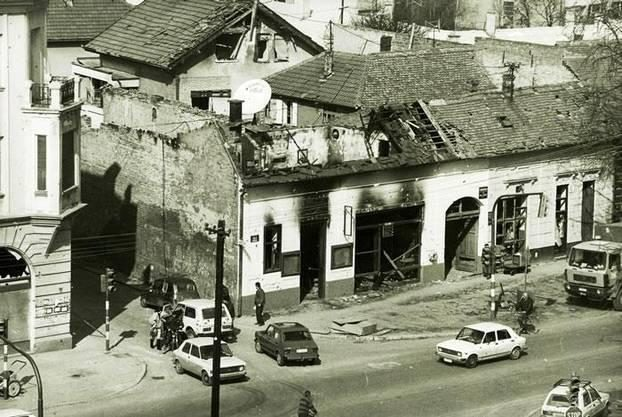
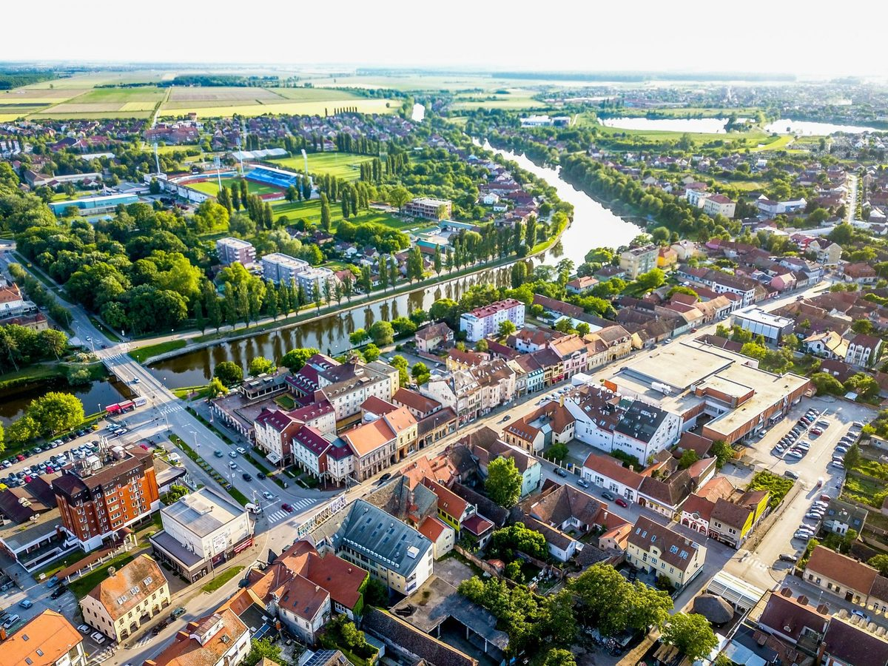

Tijekom Domovinskog rata, Vinkovci su bili jedna od ključnih točaka obrane istočne Slavonije, poznati kao "Vrata Hrvatske",
koji su unatoč višemjesečnom sustavnom razaranju i teškom okruženju ostali nepokoreni grad.
Početak sukoba i prvi napadi (ljeto 1991.)
Prve žrtve: Nagovještaj rata zbio se 2. svibnja 1991. godine u obližnjem Borovu Selu, gdje su među ubijenim hrvatskim redarstvenicima bili i pripadnici Policijske uprave Vinkovci.
Prva granatiranja: Vinkovci su postali prvi grad u Hrvatskoj napadnut minobacačima već 19. srpnja 1991., a samo tri dana kasnije, 22. srpnja, grad je napadnut i iz zraka.
Tragedija na Privlačkom putu: Dana 22. srpnja 1991. izvedena je Akcija Mirkovci (Tišina) s ciljem neutralizacije neprijateljskih položaja.
Akcija je završila neuspjehom i pogibijom 13 hrvatskih branitelja, uglavnom pripadnika 3. gardijske brigade ZNG-a.
Prvi opći napad: Otvoreni topnički pakao započeo je 24. srpnja 1991., kada su JNA iz vinkovačke vojarne "Đuro Salaj" i paravojne snage iz Mirkovaca zasule grad stotinama projektila.

Ključne obrambene postrojbe i bitke
Obrana Vinkovaca počivala je na hrabrosti domaćih branitelja i dragovoljaca iz cijele Hrvatske:
- Legendarne brigade: U Vinkovcima su osnovane i djelovale 3. gardijska brigada "Kune" (2. bojna), pričuvna 109. brigada HV-a (koja je držala golemu liniju bojišnice od 60 do 70 kilometara) te kasnije 5. gardijska brigada "Sokolovi".
- Obrana Nuštra kao ključ opstanka: Selo Nuštar, smješteno između Vinkovaca i Vukovara, bilo je glavna meta neprijateljskog proboja. U presudnoj bitci 5. listopada 1991., malobrojne hrvatske snage (ZNG, policija i HOS) uspjele su u uličnim borbama uništiti neprijateljske tenkove JNA i odbaciti ih iz centra sela, čime su izravno spriječile pad Vinkovaca i prelazak rijeke Bosut.
Kraj rata i žrtve
Vinkovci su u okruženju i pod stalnom uzbunom proveli više od dvije godine, a sporadični napadi nastavili su se sve do završnih oslobodilačkih operacija.
Posljednja žrtva u Vinkovcima pala je 5. kolovoza 1995. godine tijekom operacije Oluja, kada je u granatiranju grada ranjeno 16 osoba, a jedna je podlegla ozljedama.
Kroz vinkovačku bolnicu tijekom ratnih godina prošle su tisuće ranjenika, a stotine branitelja i civila ugradile su svoje živote u obranu ovog nepokorenog grada.
